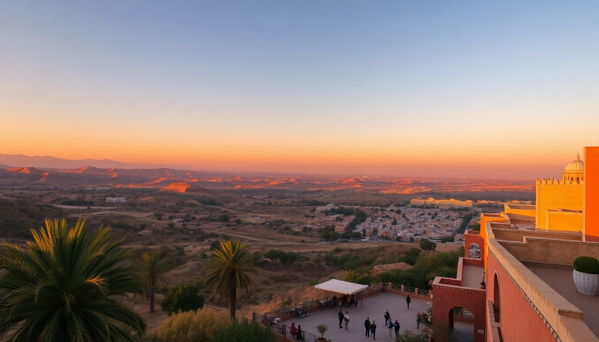

Best Time to Visit Morocco: Month-by-Month Guide for 2025

I spent three weeks zigzagging Morocco last November—Marrakech heat, Fes chill, Chefchaouen mist—and learned the hard way that timing matters more than any packing list. Here’s the month-by-month truth for 2025, so you don’t book a desert tour in August or freeze on a rooftop in January.
When is the best overall time to visit Morocco in 2025?
April, May, September, and October are your sweet spots. Crowds are manageable, temperatures sit in the low 70s to mid-80s °F (21-30°C), and you can actually walk through the Fes medina without smelling like a damp goat. I hit Marrakech in early May—Jemaa el-Fnaa was lively but not shoulder-to-shoulder, and I could sit at Café des Épices without fighting for a table. Booking hotels like Riad Fes or La Maison Arabe two months ahead keeps rates reasonable; last-minute in peak spring means paying double.
What is Morocco like in winter (December, January, February)?
Cold nights, clear days, and the least crowds of the year. In Marrakech, daytime temps hit the low 60s °F (16°C), but drop to 40s after dark—bring a puffy jacket. I stayed at Riad Kniza in January; the courtyard fire was essential. Fes gets raw: 50°F (10°C) highs and rain. Chefchaouen? I’d skip it in December unless you like fog so thick you can’t see the blue walls. The Atlas Mountains get snow, which is stunning for day hikes, but the Sahara desert tours run cold—I saw a guy in shorts at Merzouga in February and felt secondhand pain. Affiliate tip: eSIMs from providers like Airalo work fine here, but download offline maps before the mountains—signal drops fast.
How does spring (March, April, May) shape up for travel?
March is transitional—still chilly in Fes (50s °F), but Marrakech hits the 70s. By April, the Majorelle Garden is blooming with bougainvillea, and you’ll share the paths with half of Europe. I preferred late April for Chefchaouen—the hillsides are green, and the Ras el-Maa waterfall actually has flow. May is prime: we walked the Fes tanneries at 9 a.m. without gagging from the heat. Book GetYourGuide walking tours early—the “Fes Food Tour” sells out by mid-April. One warning: Eid al-Adha (likely June 2025) can shutter restaurants for days; check lunar dates.
Is summer (June, July, August) a nightmare?
Only if you hate heat. Marrakech in July hits 110°F (43°C)—I did it once and spent midday hiding in Riad Yasmine’s pool. Fes is slightly cooler (100°F/38°C), but the medina’s narrow alleys trap oven-like air. Chefchaouen stays tolerable at 90°F (32°C) because of elevation. August is peak European vacation season—expect Jemaa el-Fnaa to be a tourist zoo, and Hotel Les Jardins de la Koutoubia to cost double. If you must go summer, stick to the coast: Essaouira (not in this guide but worth the detour) stays breezy. Or do sunrise-to-10 a.m. sightseeing, then nap through noon. The Sahara in August is genuinely dangerous—skip it.
What about autumn (September, October, November)?
September still sizzles—Marrakech in the 90s °F (32°C)—but cools by late month. October is my favorite: we walked Chefchaouen’s blue streets with a light jacket, ate tagine at Restaurant Bab Ssour without sweating, and had the Fes Bou Inania Madrasa almost to ourselves. November gets rainy; I got caught in a downpour at Jemaa el-Fnaa and ducked into Café Clock for camel burger (weirdly good). Crowds thin after mid-October, so Riad Fes dropped 30% from September rates. The Atlas Mountains start getting snow caps by late November—great photos, but hiking trails close early.
Which month has the best festivals and events?
- March/April: Fes Festival of World Sacred Music (usually April or May; check 2025 dates)—world-class performances in the Bou Inania Madrasa courtyard. Tickets sell out fast.
- June: Marrakech International Film Festival—star sightings and chaos. Hotels triple rates.
- July: Fes Festival of Sufi Culture—smaller, more intimate, and less crowded than the music fest.
- August: Moussem of Tan-Tan—a desert cultural gathering near the Sahara. Hard to reach without a guide.
- September: Imilchil Marriage Festival in the Atlas—authentic Berber traditions, but very remote.
I caught the Fes Sacred Music Festival in 2023; it was incredible but packed. Book Riad Laaroussa six months ahead if you go.
FAQ
Is Morocco safe for solo travelers during off-peak months? Yes, but winter (December-February) means shorter daylight hours and empty medinas after dark. In Marrakech, stick to Guéliz neighborhood at night. Chefchaouen is the safest bet—locals are used to solo hikers. I traveled alone in November and never felt threatened, just hassled by persistent vendors in Fes. Carry small bills (10-20 dirham) to tip guides.
Should I avoid Ramadan in 2025? Ramadan likely runs late February to late March 2025 (exact dates depend on moon sighting). Most restaurants close during daylight, but open after sunset for huge iftar feasts. I did it once—felt like a ghost town at noon, but the night markets in Jemaa el-Fnaa were electric. Hotels are cheap, but skip it if you want easy lunch options.
Can I visit the Sahara in July or August? Technically yes, but I wouldn’t. Daytime tent temps hit 120°F (49°C). Nighttime is still 90°F. The Erg Chebbi dunes are stunning, but you’ll be miserable unless you book a luxury camp with AC (like Merzouga Luxury Desert Camp). Stick to October through April for camel rides.
Conclusion
- Best months overall: April, May, September, October—comfortable weather, moderate crowds, fair hotel rates.
- Cheapest months: January, February, November—cold but empty; you’ll save 30-50% on Riad Fes and La Maison Arabe.
- Avoid if possible: July, August—extreme heat and peak prices in Marrakech; August crowds in Chefchaouen.
- Festival planners: Book Fes Sacred Music Festival (April/May) or Marrakech Film Festival (June) six months out.
- Packing tip: Layers always—I wore a t-shirt at noon in Fes and needed a fleece by 6 p.m. in October.